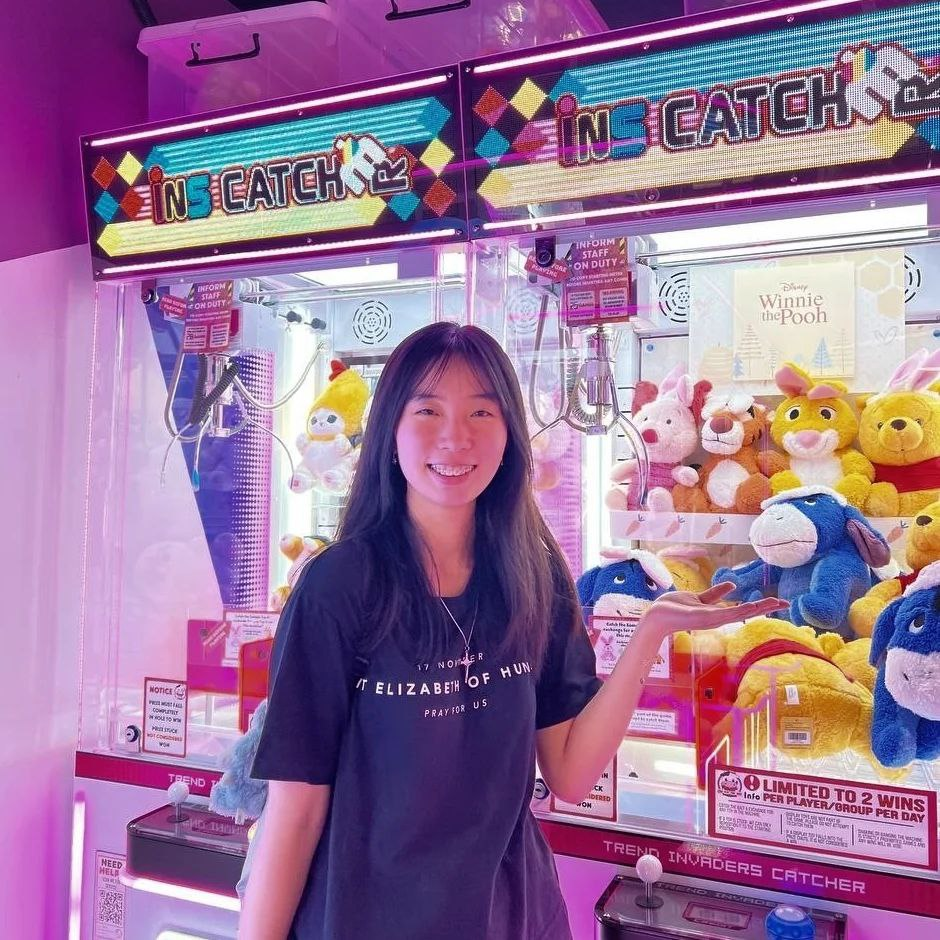

About Me
Introduction:
I am Ariel, a year 2 CNM (Communications and New Media) student at NUS!
Courses I’ve Taken:
As of end-2023, I have taken the following modules:
Communications and New Media Modules ~
NM1101E - Communications, New Media and Society
https://nusmods.com/courses/NM1101E/communications-new-media-and-society
NM2101 - Theories of Communications and New Media
https://nusmods.com/courses/NM2101/theories-of-communications-and-new-media
NM2103 - Quantitative Research Methods
https://nusmods.com/courses/NM2103/quantitative-research-methods
NM2104 - Qualitative Communication Research Methods
https://nusmods.com/courses/NM2104/qualitative-communication-research-methods
NM2207 - Computational Media Literacy (this module!)
https://nusmods.com/courses/NM2207/computational-media-literacy
Core Modules ~
DTK1234 - Design Thinking
FAS1101 - Writing Academically: Arts and Social Sciences
https://nusmods.com/courses/FAS1101/writing-academically-arts-and-social-sciences
HSA1000 - Asian Interconnections
HSS1000 - Understanding Social Complexity
https://nusmods.com/courses/HSS1000/understanding-social-complexity
HSH1000 - The Human Condition
HSI1000 - How Science Works, Why Science Works
https://nusmods.com/courses/HSI1000/how-science-works-why-science-works
GEA1000 - Quantitative Reasoning
https://nusmods.com/courses/GEA1000/quantitative-reasoning-with-data
From each module, I have learnt many valuable skills, and had a lot of fun!😁